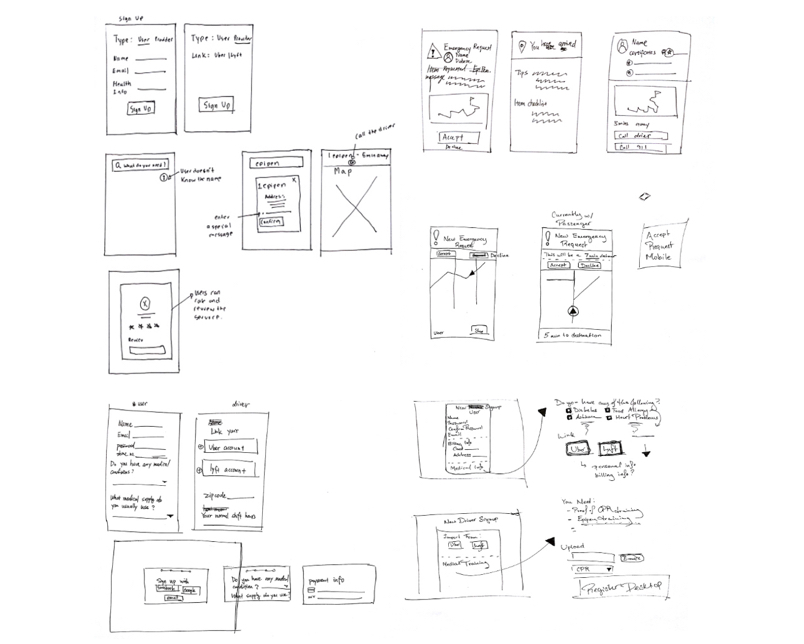

November 2017 (2 weeks)
Team: Morgan Broacha, Arlex Gole, Xueting Zhang
As an assignment for the course Interaction Design Studio, we were tasked with designing a peer economy platform in the emergency response domain. By applying the human-centered design process from research to prototype development, my group created MedShare, a platform where users can order emergency medicine and devices.
I contributed to every step of the design process from ideating and conducting research to creating the high fidelity mockups. I created the final prototype using Framer Studio.
We first interviewed 12 people about their experiences with medical emergencies. We encountered many different stories from broken bones to allergy and asthma attacks. We also interviewed Emergency Medical Technicians to gain some insights about the daily situations they dealt with.
Based on these interviews, we realized that there was on opportunity to create a medication delivery platform as a potential peer-to-peer market. We generated different scenarios for this domain describing context, triggers, interaction methods, touchpoints, and the value being exchanged.
We created storyboards of selected scenarios to quickly demonstrate the problem, context, and our solution. By speed dating our storyboards, we were able to validate our concept and revise it as needed. Based on the feedback, we chose to further explore the scenario described in the storyboard below (drawn by my teammate Xueting).
I created a screen map to identify all the screens we might possibly need and prioritize the most important ones.

If there was more time, I would love to further explore the constraints regarding regulations and factor that into my design.
One thing I learned from this project was that animations can have a major impact on usability. In this project, I used animations to help improve the user experience by reducing cognitive load and providing instant feedback.